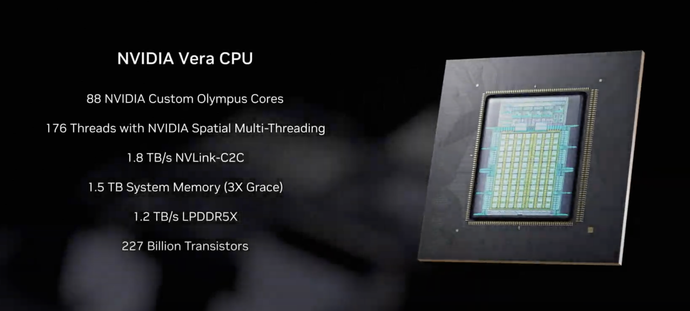
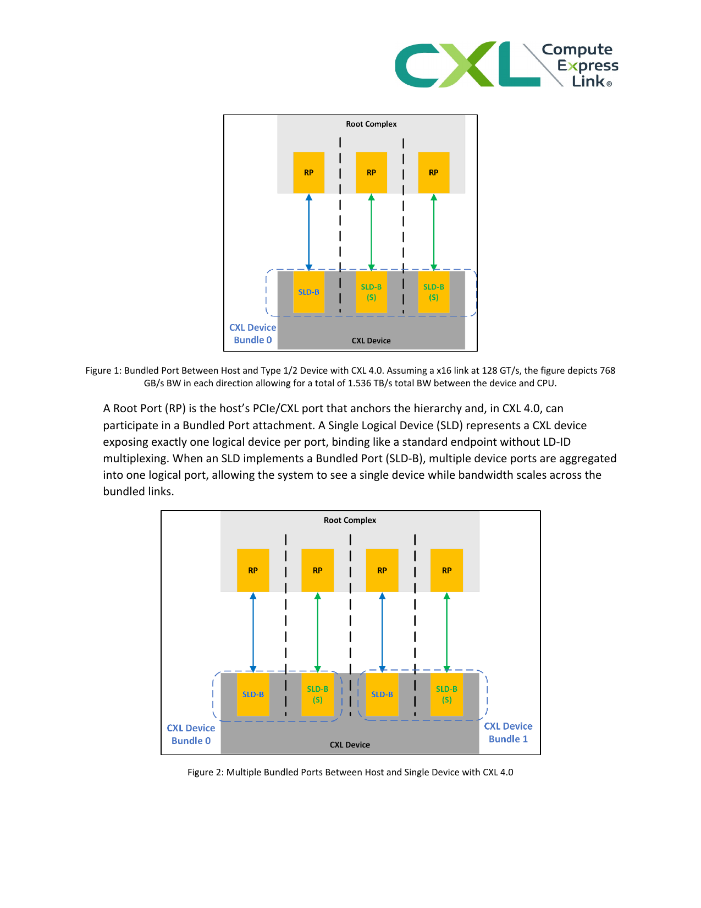

日期：2026-04-26
工作目录：review-agentic-ai-cpu-2026-04-26/
目标：形成一篇聚焦CPU 为大模型推理请求服务的完整综述，不讨论工具执行沙箱本身。
本文的目标不是重复“CPU 仍然重要”这一过于宽泛的判断，而是更具体地回答一个更尖锐的问题：
当推理负载从传统 chat inference 转向
agentic inference之后，CPU 到底是继续扮演传统 host，还是正在演化成推理系统里的control plane？
这个问题之所以值得单独写成综述，是因为 2025H2
之后公开材料已经不再只是零散地提到
kernel launch overhead、prefix cache 或
PD disaggregation。论文、官方博客、产品形态和平台路线图开始共同指向一个更大的变化：系统的主要矛盾正在从“GPU
算得够不够快”转向“状态对象是否被正确组织、保留、恢复、转移与复用”。[1][2][3][4]
本文要交付的是一篇完整综述，而不是研究日志、资料摘录或技术热点列表。完整综述至少要做到四件事：
也就是说，本文的写法必须是
判断 -> 机制 -> 证据 -> 采用状态/平台含义，而不是“先写一些材料，再在结尾给一个总结”。[2][5]
整篇文章采用 总-分-总 结构。
总论层
先回答：问题为什么现在成立、本文讨论什么、不讨论什么、四条主线如何组织。分论层 依次展开四条机制主线：
算子下发与状态驱动调度链KV 生命周期与状态复用控制平面MoE expert orchestration 与动态平衡PD 分离与跨池控制平面回收层 再回到工业采用状态、平台路线图、benchmark
空白、讨论与结论，判断哪些变化已经被业界吸收，哪些仍处于下一阶段。这种结构有两个好处。第一，它能避免把所有 CPU 现象压成一堆平铺技术点。第二，它能把“局部优化技巧”和“角色迁移”区分开，避免把一篇综述写成 patch note。[3][4][6]
本文默认采用比普通技术博客更高的证据标准。每个核心判断尽量同时具备以下四类支撑中的至少两类：
| 支撑类型 | 在本文中的作用 |
|---|---|
| 机制材料 | 解释为什么会发生，例如 CPU slowdown、KV lifecycle、MoE residency、PD disaggregation |
| 工作负载材料 | 解释为什么 agentic 形状会放大这一机制，例如 subagents、swarm、multimodal / GUI agents |
| 工业材料 | 解释业界是否真的把它做成系统能力，例如 Dynamo、TensorRT-LLM、Ray Serve、vLLM 设计文档 |
| 平台材料 | 解释厂商是否已经围绕这一角色变化调整 CPU、互连和机架组织，例如 Grace、Vera、Rubin |
如果某一判断只有直觉，没有这几类支撑中的任意一种，本文就不应把它写成强结论。[1][3][7]
对本文来说，“完整综述”至少意味着：
因此，本文的写作目标并不是证明 CPU 又重新变成“主要算力”，而是证明一个更窄也更强的判断：在 agentic inference 时代，CPU 正在成为推理状态控制面的主要承担者之一。
本章定义的不是文章格式，而是整篇综述的约束条件：要写的是一篇围绕中心命题、机制链、证据链和工业回收层组织起来的系统综述，而不是一组彼此松散的 CPU 观察笔记。后续各章都以这一标准展开。[1][2][3][4]
[1] Characterizing CPU-Induced Slowdowns in Multi-GPU LLM Inference. 2026-03-25.
[2] Full-Stack Optimizations for Agentic Inference with NVIDIA Dynamo. 2026-04-17.
[3] Prefill-as-a-Service: KVCache of Next-Generation Models Could Go Cross-Datacenter. 2026-04.
[4] Scaling Large MoE Models with Wide Expert Parallelism on NVL72 Rack-Scale Systems. 2025-12-18.
[5] vLLM CUDA Graphs Design Document. current.
[6] BentoML Handbook: Prefill-decode disaggregation. 2026/current.
[7] NVIDIA Vera CPU Delivers High Performance, Bandwidth, and Efficiency for AI Factories. 2026-03-16.
围绕大模型推理系统的讨论，过去很长时间都默认 GPU
是唯一值得优先研究的关键路径。这个判断在传统 chat inference
场景中并非没有道理，因为当请求形状较稳定、上下文相对单一、decode
比例较高时，GPU 计算和显存约束往往最容易决定系统上限。但
agentic AI 改变了这一前提。真实代理系统需要处理
pause/resume、多分支、子代理并发、共享前缀复用、多模态
ingress
和跨池状态恢复，因此推理系统的关键矛盾开始从“算得够不够快”转向“状态组织得够不够对”。[1][2][3]
这一变化不是抽象推断，而是已经被多类公开材料同时揭示。系统研究材料表明，CPU
抖动可通过同步链从局部 queueing 放大成整批 GPU 等待，vLLM
在高负载长上下文场景下的 dequeue 延迟甚至可从 12ms 放大到
228ms，约 19x。[1] 工业 serving
材料则显示，推理系统已经开始把
KV-aware routing、prefix-aware routing、PD disaggregation
和 inference transfer
做成显式能力，而不再把它们当作实现细节。[2][4][5]
平台材料进一步说明，厂商也在围绕这一变化调整 CPU
带宽、核心组织和互连方式，例如 Vera 1.8TB/s 的 memory
fabric 带宽和 Rubin 的机架级组织方式，都明显超出了“传统 host
CPU”所需的语境。[6][7]
本文围绕三个问题展开。第一，agentic workload 到底改变了
CPU 的哪些职责。第二，这些变化到底只是局部优化需求的堆叠，还是 CPU
在系统中的角色迁移。第三，工业界已经吸收了哪些能力，哪些仍处在探索或研究阶段。
这三个问题之所以必须同时回答，是因为单独回答其中任意一个都不够。只看 workload，会得到“请求更复杂了”的直觉，但不知道复杂性为什么会落到 CPU 身上。只看机制，会得到很多关于 dispatch、KV 和 MoE 的局部结论，但无法判断它们是不是同一场角色迁移的一部分。只看产品和平台，会知道厂商正在做什么，却未必知道这些动作对应的是哪一条底层机制链。因此，本文必须把 workload、机制、采用状态和平台层证据放到同一框架里统一讨论。[2][4][5][6]
本文只讨论 CPU 为推理请求服务
的场景，不讨论训练，不讨论工具执行沙箱本身的 CPU
需求，也不把浏览器、容器或外部任务运行时的消耗混入主结论。换句话说，本文关心的是
CPU 如何组织推理状态机，而不是 agent
工具链总共消耗了多少通用 CPU 资源。
时间边界以 2025H2+
的资料为主，必要时引入更早材料作为技术前史或机制基线。这一边界同样重要。更早的材料可以解释
prefix cache、CUDA Graphs 或 KV offload
的前史，但本文的核心判断必须优先建立在 2025H2 之后公开的 agentic
serving、MoE serving、PD disaggregation
和平台路线图之上，因为只有这一阶段的材料才真正把“推理状态控制面”推到前台。[3][4][6][7]
如果只看传统 inference stack，“CPU 重要”并不构成一个新命题；host 一直都存在。真正新的地方在于，agentic inference 使 CPU 的职责从“发起计算前的辅助动作”转向“跨阶段、跨上下文、跨节点地持续推进状态对象”。这类职责有几个共同特征：
也正是在这个意义上，“机头 CPU”才开始从一个模糊工程配角，变成值得单独研究的系统对象。
因此，本文的出发点并不是重申“CPU 仍然重要”，而是解释：为什么在 agentic inference 时代，CPU 开始成为一个与 GPU 并列、但职责完全不同的关键系统角色。 后续章节会把这一问题拆成 workload 变化、四条机制主线、工业采用状态和平台响应四个层面依次展开。[1][2][6][7]
[1] Characterizing CPU-Induced Slowdowns in Multi-GPU LLM Inference. 2026-03-25.
[2] Full-Stack Optimizations for Agentic Inference with NVIDIA Dynamo. 2026-04-17.
[3] Prefill-as-a-Service: KVCache of Next-Generation Models Could Go Cross-Datacenter. 2026-04.
[4] Scaling Large MoE Models with Wide Expert Parallelism on NVL72 Rack-Scale Systems. 2025-12-18.
[5] BentoML Handbook: Prefill-decode disaggregation. 2026/current.
[6] NVIDIA Vera CPU Delivers High Performance, Bandwidth, and Efficiency for AI Factories. 2026-03-16.
[7] Inside the NVIDIA Rubin Platform: Six New Chips, One AI Supercomputer. 2026-01.
本综述的中心判断是：agentic AI 正在把 CPU 从传统意义上的
host，推进为 inference control plane。这里说的不是 CPU
重新成为主要计算设备，而是它在推理系统中的职责发生了结构性变化。过去，CPU
更多承担请求接入、基础调度、数据搬运和 GPU 陪跑等辅助角色；而在 2025
年下半年以后，随着
PD 分离、KV 生命周期管理、prefix cache 复用、MoE expert orchestration
和 multi-agent workload 同时强化，CPU 需要持续协调
compute、cache、bandwidth、placement
与 node role，从而进入真正的关键路径。[1][2][3][4]
这一定义要求我们在一开始就排除一个常见混淆：本文讨论的是 CPU 为大模型推理请求服务时的职责演变，不讨论工具执行沙箱、浏览器自动化容器或外部工具运行时本身的 CPU 消耗。换句话说，本文关注的是“推理控制面”而非“工具运行面”。
围绕这个命题，当前材料呈现出四条互相咬合的变化。第一，agentic workload
本身已经不再服从传统 chat serving
的理想假设。真实产品形态显示，请求越来越表现为
pause/resume、fan-out/fan-in、session multiplicity、branch reuse
和 multimodal ingress 的组合，而不是平滑的单上下文长
decode。[5][6][7]
第二，模型与系统结构都在把状态对象显式化。KV cache
不再只是容量问题，而变成保留、预取、恢复、转移和复用问题；MoE expert
不再只是稀疏计算问题，而变成驻留、热点、层级放置和批级平衡问题。[2][3][4]
第三，工业界已经开始把这些问题做成显式控制面能力，例如
KV-aware routing、prefix-aware routing、event-driven reuse、Prefill-as-a-Service
和 inference transfer library。[1][2][8][9]
第四，平台侧也在做出回应。Grace、Vera、Rubin
以及机架级 NVL72 方案都在表明，厂商已经不再把 CPU 只看作传统
host，而是看作 AI factory 中负责 orchestration 与 data movement
的一环。[4][10][11][12]
这四条变化之所以重要，是因为它们分别对应了命题成立所需的四类证据：
| 证据层 | 证明什么 |
|---|---|
| workload 证据 | CPU 面对的是何种新的请求形状 |
| 机制证据 | 为什么这些请求形状会把状态动作推上关键路径 |
| 工业证据 | 为什么业界真的把它做成系统能力 |
| 平台证据 | 为什么厂商已经开始按这种角色变化调整硬件 |
只有四层证据同时存在，“CPU 正在变成推理控制面”才不只是一个修辞性说法。
本综述围绕四条机制主线展开。
第一条主线是
算子下发与状态驱动调度链。这一主线回答的是：为什么 kernel
launch tax 在 agentic inference 中不再只是微观开销，而会因为
queue、worker selection、handoff 和 synchronization
被放大成调度墙。[1][8]
第二条主线是
KV 生命周期与状态复用控制平面。这里的重点不是 KV
能否被放下，而是 KV 如何在
retain、reuse、routing、resume
和 warm tier 中被系统化管理。[2][9]
第三条主线是
MoE expert orchestration 与动态平衡。其核心不再是 gate
如何做逻辑选择，而是 route 之后的
place、move、prefetch 和
rebalance 如何让稀疏计算真正转化成系统收益。[3][4]
第四条主线是 PD 分离与跨池控制平面。这条线解释了为什么
agentic workload 特别适合把 prefill 拆成独立服务，并因此把 CPU
推向跨池与跨域控制面。[5][8]
仅仅给出机制链仍然不够，因此本文另外引入两条外层验证主线。
第一条是
工业采用状态。它回答的是：哪些机制已经被产品和主流 runtime
吸收，哪些仍停留在研究验证阶段，哪些只是被明确关注但尚未广泛落地。
第二条是 平台与厂商路线图。它回答的是：如果 CPU
的角色真的在变化，那么厂商是否已经围绕这一角色调整其平台设计、CPU
带宽预算、互连架构和机架级组织方式。
这两条外层主线的意义在于避免一种常见误判：把单篇论文或单篇博客的方向感直接等同于行业现实。本文只有在机制层与采用/平台层相互印证时，才会把某项能力写成“正在进入主路径”的判断。[2][4][10][11]
本章的关键支撑不是“材料很多”，而是这些材料形成了明确的闭环：agentic workload
改写请求形状，四条机制主线改写系统对象，工业采用状态显示这些变化已进入产品路线，而平台路线图显示硬件侧也已开始配合这些变化。[1][2][4][5][10]
因此，全文不是在证明“CPU 仍然重要”这样一个过于宽泛的命题，而是在证明更具体的判断：agentic inference 正在把推理系统的关键问题从局部算力供给，推进成状态对象如何被编排的问题；而 CPU 正是这一编排问题最主要的执行位置。 后续四条主线将分别回答“为什么会这样”，后面的工业与平台章节再回答“业界是否真的已经按这个方向演化”。[1][2][3][4]
[1] Full-Stack Optimizations for Agentic Inference with NVIDIA Dynamo. 2026-04-17.
[2] Prefill-as-a-Service: KVCache of Next-Generation Models Could Go Cross-Datacenter. 2026-04.
[3] FluxMoE: Decoupling Expert Residency for High-Performance MoE Serving. 2026-04-03.
[4] Scaling Large MoE Models with Wide Expert Parallelism on NVL72 Rack-Scale Systems. 2025-12-18.
[5] Kimi Introduces Agent Swarm: Let 100 AI Agents Work for You. 2026-04-11.
[6] Kimi K2.5: Visual Agentic Intelligence. 2026.
[7] Anthropic / OpenClaw / Mobile Use Agent materials as multimodal or multi-session shape evidence. 2026.
[8] BentoML Handbook: Prefill-decode disaggregation. 2026/current.
[9] NVIDIA Dynamo: Introducing NIXL (Inference Transfer Library). 2026-03.
[10] NVIDIA Vera CPU Delivers High Performance, Bandwidth, and Efficiency for AI Factories. 2026-03-16.
[11] Inside the NVIDIA Rubin Platform: Six New Chips, One AI Supercomputer. 2026-01.
[12] Grace CPU Delivers High Bandwidth and Efficiency for Modern Data Centers. 2025-12-05.
本文所说的“机头
CPU”，并不是一个严格的厂商术语，而是为了描述一类正在成形的角色：它位于
AI 推理节点或 AI 推理池的前端，负责把请求生命周期翻译成 GPU
计算、缓存复用、状态转移、内存分层和跨池路由等具体动作。按照这一含义，host CPU、control-plane CPU
和 orchestration CPU
在很多场景中会重合，但本文更强调后两者，因为我们真正关心的是 CPU
何时从传统主机角色，转向推理状态控制面的中心角色。[1][2][3]
更准确地说，本文讨论的“机头 CPU”通常同时承担三类动作：
request-facing actions：ingress、queueing、tool result
callback、session state re-entry；state-facing actions：KV / prefix / expert residency
的可见性、保留、恢复、转移与淘汰；resource-facing actions：worker selection、pool role
choice、topology-aware routing、transfer orchestration。如果某项 CPU 工作不属于这三类，例如浏览器自动化容器内部的通用计算，则不纳入本文主结论。
为避免后文混淆，这里先约定几个关键术语。
operator dispatch 指 CPU/host 如何将 GPU
计算阶段组织成可执行序列，包括 kernel launch、worker
selection、队列控制和运行时图化。本文在主线一里会进一步说明，真正危险的往往不是单次
launch，而是由 queue、handoff 和 synchronization 组成的完整
state-driven dispatch chain。[4][5]
PD disaggregation 指 prefill 与 decode
在资源、节点或服务角色上被显式拆开。它不是“把一个请求切两半”这么简单，而是把推理系统改造成多个角色池之间的显式状态流转问题。[2][6]
prefix cache
指围绕共享前缀所做的状态复用机制；其后续技术包括
cache affinity、retention policy、event-driven reuse
和 cache identity。也就是说，本文不会把 prefix cache
只理解成“命中一个
block”的局部技巧，而会把它放在更大的状态复用控制面里理解。[1][7][8]
KV offloading 指 KV 在 GPU HBM 之外的层级放置与恢复，而
sparse KV access 更强调访问 policy
和选择性搬运。前者偏“层级位置”，后者偏“访问选择”；两者共同构成主线二里
CPU 角色扩张的基础。[1][9][10]
MoE routing / residency
指逻辑专家选择与物理专家驻留之间的关系。本文会严格区分“路由决定哪个
expert 该被访问”和“系统能否让这个 expert
及时就位”这两个层次，因为后者才是 CPU control plane
真正介入的位置。[3][11]
graphification、CUDA Graphs 和
persistent kernel 则是 dispatch 侧降低 host
开销的重要路线，但它们也带来 capture memory、warmup 和 fallback
的服务化代价。因此它们在本文中既是性能优化项，也是控制面复杂度重分配项。[5][12][13]
本文采用四层分析框架。
第一层是 机制层，回答某种现象为什么发生，核心对象包括
dispatch、KV、MoE 和 PD 分离。
第二层是
workload 层，回答真实产品形态如何改变问题定义，核心对象包括
subagents、swarm、mobile/GUI agents 和 multimodal ingress。
第三层是
采用状态层，回答业界已经吸收到哪一步，以及哪些仍停留在探索或研究。
第四层是 平台层，回答厂商是否已围绕这些角色变化调整 CPU
设计、互连结构和机架组织方式。
这个框架有一个直接好处：它能避免把所有材料都压成同一类证据。论文更适合解释机制，产品材料更适合解释工作负载形状，工业博客更适合揭示平台与运行时吸收状态，工程 issue 或设计文档则更适合限定结论边界。只有四层材料同时存在，结论才不会停留在“看起来合理”的阶段。[1][2][7][12]
本文有意识地区分两类判断：
直接证据：材料已经明确给出数字、机制或架构结论，例如
12ms -> 228ms 的 dequeue 放大、100
sub-agents 与 1,500+ tool calls、1.8TB/s 的
CPU fabric 带宽。[4][14][15]稳健推断：单一材料没有直接说出结论，但多类材料已经指向同一方向，例如“CPU
正在变成 inference control plane”。这一区分很重要，因为整篇综述的大多数强结论都不是来自某一篇材料单独喊出的口号，而是来自机制证据、工作负载证据、工业证据和平台证据的交叉印证。
本章最重要的工作不是发明新术语，而是给全文建立一套能稳定区分 workload、机制、采用状态和平台信号的阅读框架。没有这个框架，后文四条主线很容易再次退化成一组彼此平行的技术点。[1][2][3][4]
因此，本文的基本方法并不是罗列“CPU 相关技术”，而是把这些材料放到统一框架下，看它们是否共同指向同一件事：CPU 是否正在成为推理状态控制面的实际承担者。 后续每一章都会沿着这里定义的术语和四层框架来判断证据强度与结论边界。[1][2][3]
[1] Full-Stack Optimizations for Agentic Inference with NVIDIA Dynamo. 2026-04-17.
[2] BentoML Handbook: Prefill-decode disaggregation. 2026/current.
[3] FluxMoE: Decoupling Expert Residency for High-Performance MoE Serving. 2026-04-03.
[4] Characterizing CPU-Induced Slowdowns in Multi-GPU LLM Inference. 2026-03-25.
[5] vLLM CUDA Graphs Design Document. current.
[6] Prefill-as-a-Service: KVCache of Next-Generation Models Could Go Cross-Datacenter. 2026-04.
[7] Ray Serve: PrefixCacheAffinityRouter. 2026/current.
[8] Kv Events Subscriber — vLLM. current.
[9] NOSA: Native and Offloadable Sparse Attention. 2025-10-15.
[10] ScoutAttention: Efficient KV Cache Offloading via Layer-Ahead CPU Pre-computation. 2026-03-28.
[11] Scaling Large MoE Models with Wide Expert Parallelism on NVL72 Rack-Scale Systems. 2025-12-18.
[12] Event Tensor: Dynamic Megakernels for LLM Serving. 2026-04.
[13] vLLM V1: A Major Upgrade with 1.7x Speedup. 2025-01-27.
[14] Kimi Introduces Agent Swarm: Let 100 AI Agents Work for You. 2026-04-11.
[15] NVIDIA Vera CPU Delivers High Performance, Bandwidth, and Efficiency for AI Factories. 2026-03-16.
过去很多推理系统默认的工作负载原型，是“用户提交一个请求，系统做一次
prefill，再进入较长的 decode 阶段”。这个原型适合解释传统 chat
serving，但并不适合解释
agentic workload。现实中的代理系统更接近一个长生命周期状态机：请求会
pause，等待外部结果或分支决策；会
resume，把旧状态重新接回计算；会 fan-out
成多个子代理并行执行；会 fan-in
把多路结果重新汇总；还会因为 multimodal ingress
把新的视觉或界面状态不断送回模型。只要负载变成这种形态，CPU
就不再只是启动某一段 GPU
计算，而要负责管理整段状态机的切换。[1][2][3][4]
这种变化的关键不在于“请求更多”，而在于请求的时间形状、状态形状和复用结构一起变了。单轮 chat 更接近一条顺滑的 decode 曲线，而 agentic inference 更像一组频繁中断、重启、分叉和汇合的短阶段流水线。对 CPU 来说，这意味着关键路径不再只是“把 GPU 喂饱”，而是“能否持续推进状态机并维持状态对象的正确位置”。[1][5]
Agentic workload 重写 CPU
问题定义的关键，在于它把大量“以前可以忽略的状态动作”推到前台。请求
ingress 不再只是收一个
prompt，而是要接收新上下文、分支信息、历史状态和多模态输入。路由不再只是找一张空闲
GPU，而是要找最可能命中 prefix cache、最适合恢复旧 KV、最适合承接某类
prefill 或 decode 的节点。prefix/KV reuse
不再是附属优化，而是请求能否高效重启的前提。transfer orchestration
和 memory tiering 也因此变得显性，因为状态对象会在
GPU、主机内存、远端池之间流动。换句话说，agentic workload 把 CPU
从“计算之前的准备者”变成了“整个状态生命周期的编排者”。[5][6][7]
可以把这种变化压缩成四个更具体的 workload 特征：
| workload 特征 | 对 CPU 问题定义的改写 |
|---|---|
prefill-first |
CPU 面对的不再是长稳态 decode，而是大量短阶段前缀进入与再进入 |
session multiplicity |
CPU 需要同时维护多份上下文和状态对象，而不是一条单会话请求链 |
fan-out / fan-in burst |
CPU 必须承受瞬时扩张的 admission、routing 和汇合压力 |
multimodal ingress |
CPU 需要处理更不稳定的输入 shape、前处理链和状态恢复路径 |
input preprocessing |
长 prompt 和多模态输入把 tokenization 的 CPU 负载推到 TTFT 的关键路径上 |
后文四条主线本质上都是这五个 workload 特征在系统层面的展开。
input preprocessing 是 agentic workload 中最容易被低估的
CPU 特征之一。传统 chat serving 假设输入长度可控、tokenization
时间可忽略，但 agentic 场景下的长上下文 prompt、多模态截图 OCR 文本和
tool 返回的 JSON 结构体，都把 tokenizer 推到了关键路径上。
S005 的测量为此提供了直接证据：在 Llama 3.1 8B（4×H200）上，tokenization 最高可占 TTFT 的 up to 50%；随着上下文长度增长，tokenization 时间线性增加，且由于现代 serving stack 使用 chunked prefill 和 FlashAttention，prefill 时间本身也随序列长度近线性增长，tokenization 因此始终是一个不可忽视的固定比例。[8]
图： S005 Figure 5 给出的延迟分解。CPU-side tokenization 与模型前向传播的时间比例随序列长度和 batch size 变化。在长序列场景下，tokenizer 的 CPU 预处理已经足以与 GPU 计算分庭抗礼。
来源：Characterizing CPU-Induced Slowdowns in Multi-GPU LLM Inference, 2026-03.
这张图的价值在于它提供了一个经常被忽略的时间视角：人们通常认为”模型前向传播（TTFT）才是大头”，但在长序列或高并发场景下，tokenizer
的 CPU 预处理已经足以与 GPU 计算分庭抗礼。更关键的是，tokenizer
性能问题不是简单的”加几个 core”就能解决：HuggingFace Tokenizers 默认启用
TOKENIZERS_PARALLELISM=true（Rust
多线程加速子词分割），但高并发时反而因 core contention 导致绝对
tokenization 延迟再增加约 5%，TTFT 整体增加约
10%。[8]
对 agentic workload 而言，这个特征的系统性影响在于：
因此，tokenization 不是”请求进入前的一个小步骤”，而是agentic workload 时间形状中一个与输入长度线性挂钩、可占据端到端延迟一半的 CPU 密集型阶段。它与 kernel launch tax（主线一）的区别在于：tokenization 属于”请求进入前的准备阶段”，而 launch tax 属于”算子下发阶段”；两者虽然都走 CPU，但优化路线完全不同——前者靠 Rust 多线程、预 tokenization 和缓存，后者靠 CUDA Graphs、编译器图化和 persistent runtime。把这两者混为一谈会让优化策略失焦，但把 tokenization 完全忽略则会让 workload 定义的完整性受损。
这一判断并非抽象推演，而是有真实产品形态支持。
Claude Code subagents 暴露的是
session multiplicity：不同子代理拥有独立上下文窗口，会给
CPU 带来多队列、多上下文的排队与恢复压力。
Kimi Agent Swarm 与 Kimi K2.5 暴露的是
fan-out/fan-in burst：并行子代理带来短时极宽的推理并发，系统支持最多
100 个 sub-agents、1,500+ tool
calls，并报告相对顺序执行最高 4.5x 的 wall-clock
改善。这里真正重要的不是营销数字本身，而是它们证明了“单次请求”已经被切碎成大量并发短阶段。[2][3]
OpenClaw、Mobile Use Agent 与可视化 agent
形态材料暴露的是 multimodal ingress 和
resume-heavy execution：图像、界面和多轮操作轨迹反复进入推理链路，使
prefill 和恢复路径比连续 decode 更容易先成为瓶颈。[3][4]
这些产品材料共同说明，我们不能再用“CPU 是否足够把 GPU 喂饱”来定义问题。更准确的定义应是：CPU 是否能够稳定地组织请求状态的进入、保留、恢复、分支和回收。

图 1 的价值不在于展示一个抽象 workflow，而在于把 CPU
面临的关键动作可视化了：prefill -> tool call -> resume -> shared prefix re-enter -> state handoff
被不断重复。这正是为什么 agentic inference 下的 CPU
更像状态编排器，而不只是 launch 发起者。[2][3][4]
一旦把 CPU 问题定义改写成“状态对象能否被正确组织”，后文四条主线就会变得自然：
dispatch chain 就会从 launch
overhead 演化成调度墙。KV cache
就会从容量对象演化成生命周期对象。MoE 就会从稀疏计算演化成
orchestrator 问题。prefill/decode
就会从单节点优化演化成跨池控制平面。[1][5][6][7]也就是说，本章不是全文前言的重复，而是四条主线的问题定义层。
本章的核心证据不是单篇论文，而是产品形态、系统机制和服务架构三类材料的交叉支撑：agentic
workload 已经在现实产品中呈现为
prefill-first、burst-heavy 和
resume-heavy
的组合，而系统侧也已经开始沿状态复用、状态转移和角色拆分来吸收这种变化。[1][2][3][5]
因此，agentic workload 重写 CPU 问题定义的方式，不是简单增加了更多请求，而是改变了请求的时间形状、状态形状和复用结构。CPU 在这里进入关键路径，不是因为它突然要做更多数值计算，而是因为它承担了更多跨阶段、跨上下文和跨节点的状态决策。后面的四条主线，本质上就是这一定义在 dispatch、KV、MoE 和 PD 分离四个系统对象上的具体展开。[1][2][5][6]
[1] Prefill-as-a-Service: KVCache of Next-Generation Models Could Go Cross-Datacenter. 2026-04.
[2] Kimi Introduces Agent Swarm: Let 100 AI Agents Work for You. 2026-04-11.
[3] Kimi K2.5: Visual Agentic Intelligence. 2026.
[4] Anthropic / OpenClaw / Mobile Use Agent materials as multimodal or multi-session shape evidence. 2026.
[5] Full-Stack Optimizations for Agentic Inference with NVIDIA Dynamo. 2026-04-17.
[6] BentoML Handbook: Prefill-decode disaggregation. 2026/current.
[7] Kv Events Subscriber — vLLM. current.
[8] Characterizing CPU-Induced Slowdowns in Multi-GPU LLM Inference. 2026-03.
kernel launch tax 之所以在今天被重新关注，不是因为 GPU
计算突然不重要了，而是因为小模型、量化模型、动态 batch
和更细碎的推理回合正在暴露出固定 host 开销。过去在大模型、长 decode
和较粗粒度执行中，launch overhead
常常被有效计算时间淹没；而在更短、更频繁、更动态的 agentic workload
下，这部分固定开销开始变得可见。S005
进一步说明，CPU-induced slowdown 不只是“CPU 忙一点”，而是会通过多 GPU
同步链被明显放大。
真正让 launch overhead 升级为 调度墙 的，并不是单次
launch 本身，而是它所在的整条链。一个请求从进入系统到真正落到 GPU
上，往往要经历 queue、worker selection、cache-aware
placement、broadcast/handoff、batch formation 和
synchronization。只要这些动作依赖请求状态而不是固定静态图，它们就会表现出更高的动态性。Agentic
workload
恰恰会持续制造这种动态性，因为请求会频繁恢复、分支、汇聚，并携带不同程度的共享前缀和历史状态。因此，CPU
面对的不再是一次 launch，而是一条由状态驱动的连续调度链。
更关键的是，这条链中的各个环节并不是彼此独立的并列消耗，而是一条相互放大的顺序链。queue
决定请求何时进入真正可执行状态；worker selection
决定请求将沿着哪条资源路径前进；broadcast/handoff
把选择结果落实为实际的数据面动作；synchronization
则会把前面所有微小抖动放大成对整批请求都可见的尾延迟。也就是说，调度墙之所以危险，不在于某一环绝对最慢，而在于多个“只慢一点”的
host-side 动作会沿着同一条执行链叠加。
从这个角度看，agentic inference 比传统 chat serving 更容易撞上这堵墙，并不只是因为请求更多，而是因为它让状态切换更频繁、控制动作更碎、而每次控制动作所服务的有效计算窗口反而更短。只要 GPU 侧单段计算被切碎到一定程度，CPU 侧的 sequencing cost 就会自然抬升为系统上限。
图化编译和运行时图化之所以重要，是因为它们试图把这条链里最稳定、最重复的一部分结构化出来。piecewise CUDA Graphs、full graphs、persistent kernels
以及 Event Tensor 所代表的路线，本质上都在降低 host
侧反复发射与切换的开销。但它们的价值并不是“把编译做得更漂亮”，而是让部分
dispatch 动作从高频前台操作转化为较低频的预结构化动作。对 agentic
inference 来说，这有助于缓解短回合、高恢复频率负载下的 dispatch
tax。
图化路线的收益和代价都已经比较清楚。收益在于：它能够缩短 steady-state
路径，减少 CPU
反复提交小块工作时的固定成本，并提升较稳定阶段的吞吐。代价在于：它会引入
capture memory、warmup cost、shape mismatch fallback
和 backend compatibility
的问题。尤其在服务化推理里，工作负载并不总是稳定形状，多模态输入、PD
分离、resume-heavy
路径和不同批结构都会迫使系统保留回退路径。因此，图化编译不能被理解为“消灭调度问题”，而更应被理解为“把一部分可预测调度预先压缩”，剩下的动态部分仍由
CPU 控制面承担。
这也是为什么工业界当前更容易采用保守的 piecewise
图化，而不是假设所有服务路径都能被一次性 capture
成稳定大图。图化真正解决的是“重复且可预测”的 dispatch
税，而不是“高度动态的状态机”本身。后者仍然需要 CPU
在请求进入、状态恢复、分支汇聚和回退路径之间持续做判断。
本章主要依据以下文献展开：[1]-[4], [35]-[37]。
所以，算子下发之所以从 launch overhead 变成
调度墙，不是因为单个 kernel launch
比以前更贵，而是因为请求生命周期正在更频繁地触发
queue、placement、batching、handoff 和
synchronization。图化路线可以削减其中一部分前台开销，但无法替代 CPU
对整条状态驱动调度链的组织。
把 KV 只看成“GPU HBM
放不下时的外溢对象”已经不够。当前材料更一致地表明，KV 是一个
write-once-read-many
的状态对象，其核心问题从“是否能卸载”转向“如何管理生命周期”。生命周期至少包括
retain、evict、prefetch、resume 和 cross-request reuse。只要 agentic
workload
让状态经常暂停、恢复、分叉和重用，这些动作就会比单纯容量更关键。CPU
因此不再只是执行一次搬运，而要持续决定哪些 KV
值得保留、何时值得提前恢复、以及哪些请求应优先走已有状态。
这条变化之所以重要，是因为容量问题本质上只要求“找一个地方放下”，而生命周期问题要求“在时间上做连续判断”。一旦同一份 KV 会在不同阶段被读取、暂停、恢复、迁移和共享，CPU 的职责就会从一次性内存调度，变成长期状态对象管理。对 agentic inference 而言，这种长期性尤其明显，因为 pause/resume、branch reuse 和多会话交错都会不断重用旧状态。
S006 和 S007 进一步说明，稀疏 attention
的价值不只是少算一些 token 相关操作，而是把 KV 管理推进到选择性访问和
policy 驱动阶段。NOSA 说明 locality engineering 决定
selected KV transfer 是否还能承受，ScoutAttention 则把 CPU
从搬运者推进到 layer-ahead
协同者。换句话说，稀疏访问降低了部分数据流量，但同时抬高了正确选择、正确预取和正确恢复的要求。CPU
在这里更像一个 KV access policy engine。
Automatic Prefix Caching
的真正历史意义，在于它把“前缀复用”第一次做成了推理 runtime
的显式能力。它证明 KV
不只是一次性中间结果，而是可以跨请求保留和重用的状态对象。但 APC
也只解决了最初级的问题：相同或近似相同前缀能否被本地命中。它没有完整解决分布式
worker 间的可见性、热点前缀的长期保留、多模态 identity 和 cache-affinity
与 load-balance 的取舍。也正因为 APC 只有第一代能力，后续技术才会迅速向
routing、retention 和 event-driven reuse 演化。
后续演化的关键词是
prefix-aware routing、cache affinity、selective retention、event-driven KV reuse、early reuse
和 multimodal cache identity。这些机制共同说明，prefix
cache
的瓶颈已经从“如何命中”转向“如何让命中的收益稳定、正确、可持续”。在工程上，这意味着
CPU 需要维护近全局或近似全局的缓存可见性，决定热点 prefix
的保留策略，并在 cache hit
与负载均衡之间持续做权衡。S041-S047 还显示，dirty
cache、pinned
prefixes、延迟波动和多模态错误复用都已经从工程问题暴露出来。
这一演化链还意味着一个更深的变化：prefix cache 不再只是本地 runtime
的“内部技巧”，而开始变成外部控制面可以看见和利用的系统对象。只要 cache
state 被路由器、保留策略和事件订阅者共同消费，CPU
就不再只是运行一个缓存表，而是在扮演
affinity router、retention policy engine 和
reuse coordinator。也正因为如此，prefix cache
之后的技术重点会从单纯命中率，转向状态身份、事件流、路由取舍与错误复用代价。
工业界已经开始把上述能力做成显式控制面对象。S003、S014、S034、S041
和 S042
显示，KV-aware routing、warm tier、event API、cache state visibility、priority-based retention
和 early reuse 不再只是论文设想，而是 runtime 和 serving
stack 的一等能力。这意味着 KV 生命周期管理已经开始工业控制平面化。CPU
的职责因此可以被明确描述为：它既是 state broker，也是
reuse coordinator，还是
resume-path optimizer。
从工业现实看，这一步比单纯的 offload 更关键。因为 once-off offload 只能解释“放不下时怎么办”，而控制平面化解释的是“状态对象如何成为调度输入”。只要 KV 的位置、价值和未来复用概率都需要被持续感知，CPU 就已经不再是旁观者。
本章主要依据以下文献展开：[5], [6], [23]-[31], [38]-[44]。
因此，KV 这条主线真正揭示的，不是“CPU 要帮 GPU 腾内存”这么简单，而是 CPU 正在承担状态对象的保留、恢复、路由和复用决策。一旦问题被这样定义，KV lifecycle 就自然成为 AI CPU 进入关键路径的核心证据之一。
MoE 的第一层误解，是把“每个 token
只激活少量专家”直接等同于“系统会更轻”。实际上，稀疏计算节省的是部分 GPU
计算量，但它同时引入了更强的不规则状态访问。只要
cold expert、expert miss 和
synchronization chain
没被控制住，稀疏性带来的理论优势就可能在物理系统中被吃回去。服务化推理关心的不是
gate 本身看起来多优雅，而是 route
之后的专家是否在位、是否会制造额外搬运、是否会让 batch
中最慢路径决定整体尾延迟。
这里最容易被低估的是
expert skew。即便大多数专家都能被正确放置，少数热点专家仍可能反复争抢局部驻留预算、链路预算和批次预算。于是，问题不再只是“这次
miss
了哪个专家”，而是“路由分布会不会长期把系统推向少数热点路径”。一旦按这个角度看，MoE
routing 就自然从局部 gate
选择问题，演化成跨时间窗、跨批次和跨拓扑的控制面问题。
这一问题直接引出了 FluxMoE、FineMoE 和
SpecMoEOff
等工作。它们虽然实现路径不同，但共同在修复同一条链：route -> place -> move -> overlap -> rebalance。FluxMoE
把逻辑专家身份与物理驻留位置解耦，强调多层级驻留与带宽均衡；FineMoE
利用更细粒度 expert map 和访问结构缓和热点；SpecMoEOff
则尝试把专家搬运代价藏进投机与重叠路径中。这三者共同说明，CPU 在 MoE
中的职责已经从“遇到 miss 再搬运”升级为“持续控制 residency、prefetch
与热点平衡”。
这三条路线合在一起揭示出一个更稳定的结论：工业界未来即便不完全照搬某篇论文，也必须吸收其中的控制逻辑。因为不管实现手段是热度映射、分层驻留还是 speculative overlap，最终都在回答同一件事：如何让逻辑上的稀疏专家，以物理上可承受的方式出现在正确的位置。
MoE 的真正系统问题不是路由本身，而是
expert skew。如果热点专家集中在少数 GPU、少数链路或少数
batch shard
上，那么即便整体激活参数减少，系统也仍可能在局部过载和同步等待中退化。于是，topology-aware placement、hot/cold expert
区分和 batch-level balance
就不再是附属优化，而成为收益能否兑现的核心条件。CPU 在这一阶段更像一个
expert residency controller 与
dynamic balance orchestrator。
工业界目前还没有把所有论文路线完整产品化，但已经明确吸收了问题定义和平台组织方式。Wide Expert Parallelism
说明业界已接受：MoE 不再是单请求小技巧，而是批级、跨
GPU、跨节点的组织问题。当前更成熟的吸收路径往往先落在 runtime
组织、平台拓扑和分层驻留上，而不是直接照搬每篇论文的预测算法。这一状态本身也说明，MoE
的关键矛盾已经从“算不算”转向“怎么放、怎么搬、怎么平衡”。
这也是为什么 MoE 章节在本文中不是附属补充，而是 CPU 控制面的一条独立主线。只要专家访问分布持续不均，CPU 就必须同时管理驻留位置、预取时机、局部热点和同步放大，而这些职责都不是 GPU 内部单独能解决的。
本章主要依据以下文献展开：[7], [32]-[34]。
因此，MoE 把 CPU 推到前台，并不是因为 CPU 需要重新承担主要数值计算，而是因为 逻辑稀疏必须被翻译成物理可承受的驻留、预取、搬运和热点平衡。这一步正是 host-side orchestration 的典型问题。
并不是所有推理负载都同样适合做 PD 分离。Agentic
inference 之所以特别适合把 prefill
拆出来，是因为它同时具备三个特征：prefill-first、shared-prefix-rich
和
remote-prefill-feasible。真实代理系统里，很多回合并不会生成很长的连续
decode，却会反复触发短促但昂贵的
prefill；同时，不同回合和不同子代理又共享大量 system prompt、role、tool
schema 和任务模板。只要共享前缀大量存在，prefill
的重复就值得被单独优化。一旦 reduced-KV、hybrid attention 和 early reuse
把状态回传的带宽压力压到可讨论范围，remote prefill
就不再只是理论方案。
这一步的关键不在于 prefill 是否“更重要”，而在于它是否已经足够独立到值得单独部署和单独度量。Agentic workload 给出的答案越来越接近肯定：prefill 不再只是每个请求开头的一段计算，而是一个会被反复触发、反复复用、并且与 decode 有显著不同资源属性的服务动作。
S001-S003 显示，PD 分离正在从集群内优化推进到
Prefill-as-a-Service。这意味着 prefill
不再只是节点内部的前置阶段，而开始成为独立服务角色，甚至跨集群、跨数据中心和异构集群存在。随着这一演化，CPU
的问题也随之改变：它不再只需处理本地阶段切换，而需要处理
cross-cluster、cross-datacenter 和
bandwidth-aware scheduling。同时，cache-aware placement
也进入主问题，因为一旦 prefix reuse
能跨池发生，放错位置就会直接浪费预期收益。
与单集群 PD 相比，Prefill-as-a-Service
真正新增的不是“更多
worker”，而是三类新的控制动作：远端服务选择、跨域状态回传协调，以及带宽与
cache 收益的联合评估。也正因为如此，CPU 在这一阶段已经不是本地 stage
router，而更像分布式 prefill 服务的 orchestrator。
当 prefill 被池化或服务化之后，CPU
的直接职责可以更清楚地列出来。第一，它需要组织
transfer stack，决定状态如何在 prefill 池、decode
池和中间节点间流动。第二，它需要管理
KV movement，决定哪些状态何时回传、何时保留在远端、何时应优先恢复。第三，它需要执行
cache-aware placement，决定请求去哪里能更好地命中已有
prefix/KV。第四，它必须承认 remote prefill node
是独立节点角色，而不是普通 GPU 节点的简单变体。这样定义之后，AI CPU
的目标形态已经非常接近
distributed inference control plane CPU。
这意味着，未来讨论 CPU 规格时，不能再只问“能否把本地 GPU 喂满”，而要问“能否稳定承担跨池状态流动、回传决策和节点角色协同”。一旦这样提问，AI CPU 的设计目标就会自然偏向控制面而不是传统通用主机。
本章主要依据以下文献展开：[2]-[4], [8]-[9], [30]。
所以，PD 分离这条主线的真正意义，不是把系统切成更多组件，而是把
prefill 从节点内部阶段提升为跨池可编排服务。CPU
在这里因此被推向更明确的分布式控制面角色。
从单篇笔记回看，已经明确进入工业主路径的能力主要包括
APC、prefix-aware routing、基础级的
CPU overhead reduction 和较保守的
piecewise CUDA Graphs。它们之所以先落地，是因为收益足够直接、部署边界相对清晰，而且不需要系统完全改写架构。工业界已经接受这样一个事实：共享前缀值得复用，cache
locality 值得纳入路由，部分 dispatch tax 值得通过运行时图化压缩。
第二层是已经产品化、但仍强依赖工作负载和部署条件的能力，包括
PD 分离、KV reuse policy、event-driven cache view
和 Wide EP。这些能力比第一层更接近真正的 control
plane，因为它们已经开始操纵状态放置、跨池协同和批级/跨节点组织。但它们之所以仍是条件性采用，是因为收益高度依赖
workload shape、network budget、cache hit quality
和
operational complexity。这也是为什么反方材料仍然重要：它们提醒我们，PD
分离和 cache-aware routing 并非对所有场景都一律更优。
第三层是业界已经明确关注，但仍处在试点、问题暴露或方案不稳定阶段的能力，例如
Prefill-as-a-Service、persistent prefixes 和
multimodal cache identity。这些能力之所以关键，是因为它们最能体现下一阶段
control plane
的形状；但也正因为如此，它们对元数据管理、状态正确性和服务稳定性的要求更高。当前大量
GitHub
issue、设计文档和技术博客都在说明：这不是“是否值得做”的问题，而是“做成什么样才不引入更大副作用”的问题。
NOSA、ScoutAttention、FluxMoE、FineMoE、SpecMoEOff
和 Event Tensor
代表的仍主要是研究前沿。它们对综述非常重要，因为它们清楚揭示了未来 CPU
会被推向哪些职责；但它们尚未广泛进入通用工业
runtime。原因通常不是方向不对，而是它们要么需要更强的运行时改造，要么依赖更稳定的热度预测、层次管理与平台配合。换句话说，它们更像是在揭示未来控制面的“目标结构”，而不是已经普遍部署的“默认模块”。
本章主要依据以下文献展开：[2]-[4], [7]-[9], [23]-[44]。
工业采用状态表明，业界并非还停留在“CPU 是否重要”的争论上，而是已经在逐层吸收状态控制面能力。区别只在于：哪些已经成为默认能力，哪些还是有条件的增强项，哪些仍是下一阶段的研究议程。
从 Grace -> Vera -> Rubin -> BlueField
这条线看，NVIDIA 最明确地把 CPU 推向了 AI factory
控制平面。其公开材料不只是强调 CPU
的通用性能，而更强调高带宽主机内存、近端一致性互连、context/data
movement 和 state fabric
角色。若进一步结合当前行业传闻与路线外推，NVIDIA 的下一步更可能是把
Vera + BlueField + context memory/storage 进一步平台化，让
CPU 成为更中心化的状态与数据流协调者。
AMD 的路线更像开放式 balanced host。围绕
EPYC、Instinct、ROCm 和 rack-level 组织，AMD
更强调在开放生态中提供足够强的 host
带宽、内存容量和机架级协同能力，而不是复制 NVIDIA
式的封闭控制面。这样的路线意味着 AMD 的 CPU 更可能承担开放 AI rack 中的
orchestration 和 memory-heavy coordination 角色，特别适合承接多样化
runtime 与 heterogeneous deployment。
Intel 当前更清楚地把 Xeon 放在 host-and-action hub
位置上。它不再主要争论 CPU-only inference，而是强调在异构企业 AI
中，Xeon 如何承担 orchestration、memory access、security 和 throughput
管理。若结合路线传闻来看，Intel 更可能进一步强化自己在企业异构平台中的
host 中枢角色，而不是试图在每一项指标上复制 AI-native rack CPU。
Arm 的信号最像在定义一个新品类。AGI CPU
的表述已经不只是“服务器 CPU 为 AI 优化”，而是更直接地承认 CPU 可能成为
agentic AI 基础设施中的 pacing
element。它的下一步更可能是把这一角色模板化，推动成可由系统厂商和大型客户复制的
AI-native orchestration silicon 与 rack blueprint。
四家的分歧在于：NVIDIA 更偏封闭式 state fabric，AMD
更偏开放式 balanced host control layer，Intel
更偏企业异构中的 host-and-action hub，Arm 更偏新的
AI-native orchestration silicon。它们的收敛点则很明确：都在围绕带宽、coherence、data
movement、deterministic multi-tenancy 和 node-level coordination 重写
CPU 角色。也就是说，下一阶段竞争点并不是谁更像传统服务器
CPU，而是谁更能把 CPU 固化成推理状态控制面的标准形态。
如果把这条厂商路线图和最近补下来的平台材料放在一起看，一个更值得单独写清的收束判断就会浮出来：
agentic 处理器趋势的核心，不是 CPU、GPU、NPU 各自如何演进，而是哪种平台最先把
状态、互连、host memory hierarchy 和基础设施旁路组织成可持续的 AI control plane。
这一步很重要，因为它决定了我们后面到底该怎么看“处理器趋势”。如果问题被写成“哪家 GPU 更强”或“哪一代 HBM 更快”，那主语就错了。对本综述真正重要的是：
control plane / data engine也正因此，GPU 和 HBM
在这里最多只能作为平台背景条件，而不应再作为主论点展开。
在当前公开材料里，NVIDIA
是这条主线最强的正例。Grace -> Vera -> Rubin -> BlueField
这条线，不是在回答“如何再做一颗更强的加速器”，而是在回答“如何把
CPU、网络、旁路和平台调度写成同一个 AI factory 定义”。
补充材料里最强的两份一手证据来自：
NVIDIA Vera CPU Delivers High Performance, Bandwidth, and Efficiency for AI FactoriesInside the NVIDIA Rubin Platform: Six New Chips, One AI Supercomputer前者没有把 Vera 当成传统服务器 CPU 去写，而是直接围绕
agentic 与 AI factory 场景给出指标：88 个
Olympus cores、1.2TB/s 内存带宽、1.5x sandbox
performance、单机架 4x sandbox
capacity。这里最重要的不是数字本身，而是这些数字对应的是一种新的 CPU
职责定义：CPU 不再只是配套 host，而是面向
sandbox、data movement、context switching
和持续并发控制任务优化的基础设施组件。
后者则把 Vera CPU、Rubin GPU、BlueField-4、ConnectX-9、Spectrum-6
等部件写成同一个 AI factory 平台，并明确把 CPU 放在
data movement、memory 和
control flow 的位置上。也就是说，NVIDIA 当前回答 agentic
负载的方式，已经不是“单颗芯片更强”，而是“整个平台如何围绕 control plane
和 state fabric 重写自身”。

图：Vera CPU 的高带宽和统一拓扑设计，更像是在回答 AI factory 中的控制面与数据流动问题，而不是传统通用 host CPU 的延续。来源：NVIDIA Vera technical blog，2026-03。

图：Rubin 平台把 CPU、GPU、DPU、NIC、switch 作为同一个系统写进平台图，说明竞争单位已经从“服务器”变成“AI factory 平台”。来源：Rubin 平台公开材料，2026-01。
因此，这条线可以被收敛成一句话：
NVIDIA 已经不把 CPU 当成 GPU 服务器的配件，而是在把它推进成 AI factory
的第一层 control plane / data engine。
与 NVIDIA 对照，AMD + UALink + UCIe + CXL
更像是另一条开放路线。它当前没有形成同等成熟的平台闭环，但技术底盘已经相当清楚。
AMD 自己的公开表述，已经开始把 agentic AI 所需的
GPU + CPU + NIC 协同、开放机架参考设计以及
UALink
路线放在同一语境里。更关键的是，UALink、UCIe
与 CXL 4.0
这组三类标准，提供了开放路线所需的底层编排能力：
UALink 把大规模 scale-up 和未来
in-network compute 的能力公开化；UCIe 把 package-level die-to-die
开放互连制度化，降低多厂 chiplet 组合的摩擦；CXL 4.0 把 host-device 扩展能力继续往上推，尤其是
Bundled Ports 和 128GT/s 之后，CPU
更容易成为更大的内存与状态编排入口。
图：CXL 4.0 的 Bundled Ports 将 host-device 带宽扩展和端口聚合制度化，这对未来 CPU 作为更大状态与内存编排入口具有直接意义。来源：CXL Consortium white paper，2025-11。
因此，开放路线当前最稳的写法不是“AMD 会不会赢”，而是：
如果 agentic inference 持续抬高状态对象的驻留、迁移、预取和复用成本，那么 CPU 要继续扮演系统中枢，就必须依赖更开放的互连和更开放的 host memory hierarchy，而不只是 CPU 自身参数。
把这批材料收束之后，这一节真正保留的主变量只有四个：
CPU role redefinitioninterconnect as control-plane substratehost memory hierarchy as orchestration objectinfrastructure offload也就是说，这里真正重要的不是某代 GPU 或 HBM
规格，而是整个平台里
CPU + 状态 + 互连 + host memory hierarchy + offload fabric
的关系。
这也意味着，在厂商路线图之后再进入 benchmark、研究空白和讨论章节时，读者不应只问“谁的芯片更强”，而应问：
谁的平台最先吸收了这种 control-plane 压力，并把它写进了产品与系统组织方式。
本章主要依据以下文献展开：[14]-[16]，并结合厂商路线专题材料进行归纳。
平台路线图与厂商叙事并不能直接证明某项软件机制已广泛落地，但它们足以说明一件事：CPU
正被各家厂商主动重写成 orchestration 和 state coordination
的平台角色，而不再只是传统 host。更进一步地说，agentic
时代真正被重写的，不是某颗芯片，而是整个平台里
CPU + 状态 + 互连 + host memory hierarchy + offload fabric
的关系。
如果仍只用 TTFT、ITL、TPS 和
RPS 来描述系统，就很难准确看出 AI CPU 在 agentic workload
下的真实作用。当前材料更适合支持一组新的指标：dispatch latency
用来看状态驱动调度链的前台代价，resume latency 用来看
pause/resume 路径是否高效，cache-affinity quality 和
retention hit quality
用来看状态复用控制面是否真的起效，expert skew tail latency
用来看 MoE 动态平衡是否成功，graph fallback frequency
则用来看图化路线在动态服务中的稳定性。
尽管单篇笔记已经让证据链比此前完整得多，但仍有几类缺口明显存在。第一，metadata overhead
仍缺公开而系统化的量化。第二，多模态 cache identity
仍主要靠工程问题与 bug 报告来揭示，还缺更成体系的论文总结。第三，MoE
动态平衡的公开 production data 很少，尤其缺少大规模线上
expert skew 与 tail latency 的稳定观测。第四，Prefix/KV reuse
的误判成本虽然已被多篇 issue 暴露，但在论文和官方 benchmark
中仍没有形成统一测量框架。
最值得继续追踪的方向并不只是“更多优化”，而是几类更高阶的控制面主题。state fabric
指向 CPU、DPU、storage 和 runtime
的统一状态平面；event-driven cache control
指向缓存可见性与状态动作的事件化；MoE balancing as control plane
指向专家热点不再是局部优化，而是批级和跨节点调度问题；graphification under highly dynamic serving
则指向图化路线能否真正适应 agentic inference
的高动态性。只要这几条线继续发展，CPU 的控制面地位会被进一步坐实。
本章主要依据以下文献展开：[17]-[22], [31]-[44]。
因此，研究空白并不意味着主结论站不住，而意味着：我们已经足够清楚地知道 CPU 在哪里进入关键路径，但还没有完全成熟的公开 benchmark 去稳定、可重复地度量这些路径的代价与收益。
从单篇笔记与采用状态对照可以看出，工业界最先吸收的不是所有前沿论文方案，而是那些能直接改变状态组织效率的控制面能力。这一顺序并不偶然。控制平面能力通常能跨模型、跨
workload、跨平台复用，而很多具体算法优化则更依赖特定模型结构、特定硬件或更激进的
runtime
改造。于是，prefix-aware routing、KV reuse policy、event API
和 PD 分离 这类能力先进入产品路径，而
NOSA、FineMoE 或 Event Tensor
这类更前沿的方案则仍处于验证阶段。
如果本文的核心判断成立，那么 CPU
的未来竞争点就不会只停留在传统服务器维度，例如通用整数性能或单纯核数规模。更关键的维度将转向：内存带宽是否足以支撑状态对象频繁流动，近端一致性互连是否足够强，跨池
transfer 与元数据交换是否高效，是否能够稳定支撑多租户下的 deterministic
coordination，以及平台是否允许 CPU 与 DPU、storage 和 runtime
形成统一状态平面。换句话说，AI 推理机头 CPU 的竞争，会越来越围绕
state + routing + memory + transport + tenancy 展开。
平台路线图与工作负载演化放在一起看，会得到一个更强的判断：AI 机头 CPU
正在从隐含角色变成独立产品类别。它之所以能够独立，不是因为它要替代
GPU，而是因为它有独立且越来越清晰的职责集合，包括请求编排、状态放置、缓存复用、跨池迁移、MoE
驻留协调和多阶段恢复。只要这些职责持续强化，CPU
就会在平台设计、采购逻辑、节点分工和 benchmark
设计中拥有独立位置，而不再只是“随 GPU 搭售的主机部件”。
因此，讨论部分真正想说明的是：本文观察到的变化不是零散优化趋势，而是一种更系统的角色重写。工业界先吸收控制面，平台侧随之配合，最终共同把 CPU 推成了 AI 推理系统中的独立核心角色。
综合机制、工作负载、工业采用状态和平台路线图四层证据，可以把全文结论压缩成一句话：CPU
正在从传统 host，演化为 agentic inference 的
inference control plane。
这一演化不是语义上的升级，而是由 dispatch、KV lifecycle、MoE
orchestration 和 PD 分离四条主线共同推动的系统事实。
当前工业界已经普遍接受的，不是所有前沿方案，而是
reuse + routing + graphification + runtime overhead reduction
这类更靠近控制面的能力。它们已经足以说明，CPU 的角色不再只是把 GPU
喂饱，而是负责组织状态对象进入、保留、恢复、复用和流动。与此同时，Prefill-as-a-Service、persistent
prefixes、多模态 cache identity 和更激进的 MoE residency control
仍然在把这一角色继续往前推。
因此，下一阶段真正的竞争核心不会只是“哪家的 CPU 更像传统服务器
CPU”，而会是：谁能更好地把
state + routing + memory + transport + tenancy
固化成稳定的平台能力。只要 agentic workload 继续扩大，AI 机头 CPU
就会越来越清楚地从附属
host，演化成推理系统中的独立产品类别和独立优化对象。
[1] Characterizing CPU-Induced Slowdowns in Multi-GPU LLM Inference.
2026-03-25.
[2] Prefill-as-a-Service: KVCache of Next-Generation Models Could Go
Cross-Datacenter. 2026-04-16/22.
[3] Deploying disaggregated LLM inference workloads on Kubernetes.
2026-03-23.
[4] Full-Stack Optimizations for Agentic Inference with NVIDIA Dynamo.
2026-04-17.
[5] NOSA: Native and Offloadable Sparse Attention. 2025-10-15.
[6] ScoutAttention: Efficient KV Cache Offloading via Layer-Ahead CPU
Pre-computation. 2026-03-28.
[7] FluxMoE: Decoupling Expert Residency for High-Performance MoE
Serving. 2026-04-03.
[8] Enhancing Distributed Inference Performance with the NVIDIA
Inference Transfer Library. 2026-03-09.
[9] NVIDIA Dynamo blog (NIXL section). 2025.
[10] Anthropic Claude Code Subagents. current.
[11] Kimi Introduces Agent Swarm: Let 100 AI Agents Work for You.
2026-04-11.
[12] Kimi K2.5: Visual Agentic Intelligence. 2026.
[13] Anthropic / OpenClaw / Mobile Use Agent materials as multimodal or
multi-session shape evidence. 2026/current.
[14] NVIDIA Vera CPU Delivers High Performance, Bandwidth, and
Efficiency for AI Factories. 2026-03-16.
[15] Inside the NVIDIA Rubin Platform: Six New Chips, One AI
Supercomputer. 2026-01.
[16] Grace CPU Delivers High Bandwidth and Efficiency for Modern Data
Centers. 2025-12-05.
[17] LLM Inference Benchmarking: Fundamental Concepts. 2025-04-02.
[18] Prefill-decode disaggregation. 2026/current.
[19] Prefix-aware routing: cache-conscious request distribution.
2026-04.
[20] Prefill-Decode Disaggregation: Splitting the Two Stages of
Inference. 2026-04-04.
[21] DigitalOcean: Hidden Bottlenecks in LLM Inference and How to Fix
Them. 2026-04.
[22] DigitalOcean: The LLM Inference Trilemma. 2026-04-22.
[23] vLLM Automatic Prefix Caching. current.
[24] Prefix-aware routing. current.
[25] Ray Prefix-aware routing. current.
[26] Ray PrefixCacheAffinityRouter. 2026/current.
[27] Ray Serve routing policies. 2026/current.
[28] Kimi Linear: An Expressive, Efficient Attention Architecture.
2025-10-30.
[29] Kimi Linear paper page / abstract mirrors. 2025-10-30.
[30] LMCache disaggregated prefill example. current.
[31] Introducing New KV Cache Reuse Optimizations in NVIDIA
TensorRT-LLM. 2025.
[32] Scaling Large MoE Models with Wide Expert Parallelism on NVL72
Rack-Scale Systems. 2025-12-18.
[33] FineMoE: Modeling Fine-Grained MoE Residuals for Expert Prefetching
in Serving. 2026.
[34] SpecMoEOff: Accelerating Mixture-of-Experts Inference via
Speculative Expert Offloading. 2025-08-29.
[35] vLLM V1: A Major Upgrade with 1.7x Speedup. 2025-01-27.
[36] vLLM CUDA Graphs Design Document. current.
[37] Event Tensor: Dynamic Megakernels for LLM Serving. 2026-04.
[38] Prefix-aware routing — Ray Serve LLM. current.
[39] Kv Events Subscriber — vLLM. current.
[40] 5x Faster Time to First Token with NVIDIA TensorRT-LLM KV Cache
Early Reuse. 2024-11-08.
[41] [Performance]: Improve Prefix Cache Hit Rate and Reduce Dirty Cache
Impact. 2025-09-07.
[42] [Feature]: Support Persistent/Pinned Prefixes in Prefix Caching.
2025-08-18.
[43] [Bug]: The performance for Prefix Caching is very unstable for
different requests. 2024-05-09.
[44] [Bug]: Prefix caching ignores visual input, causing incorrect
multimodal outputs under concurrency. 2025-06-23.